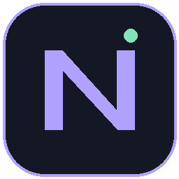
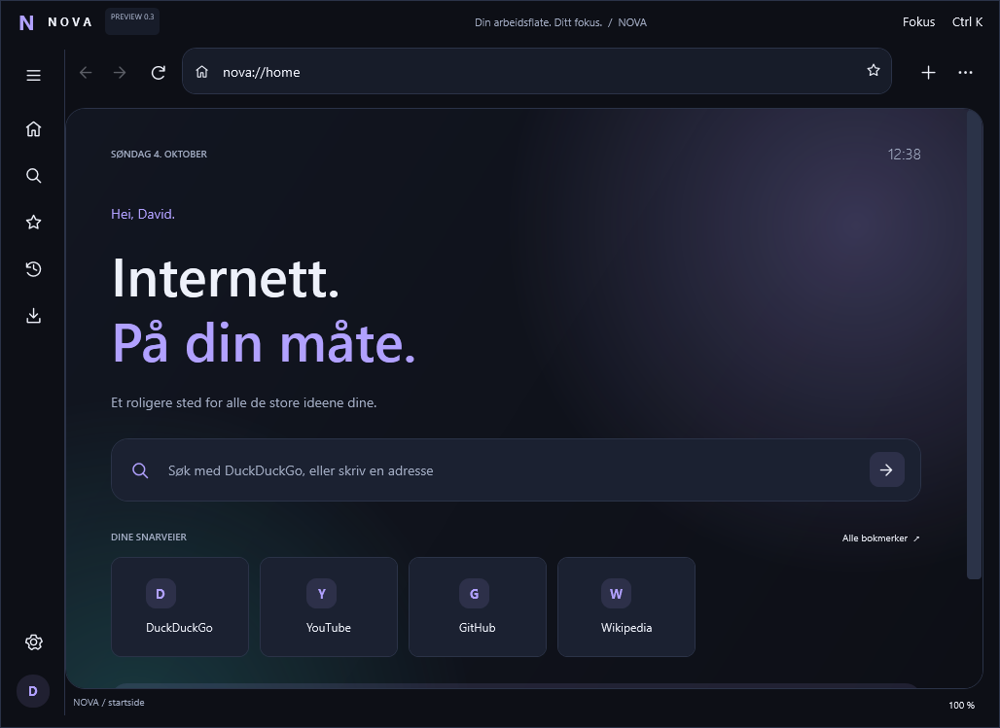
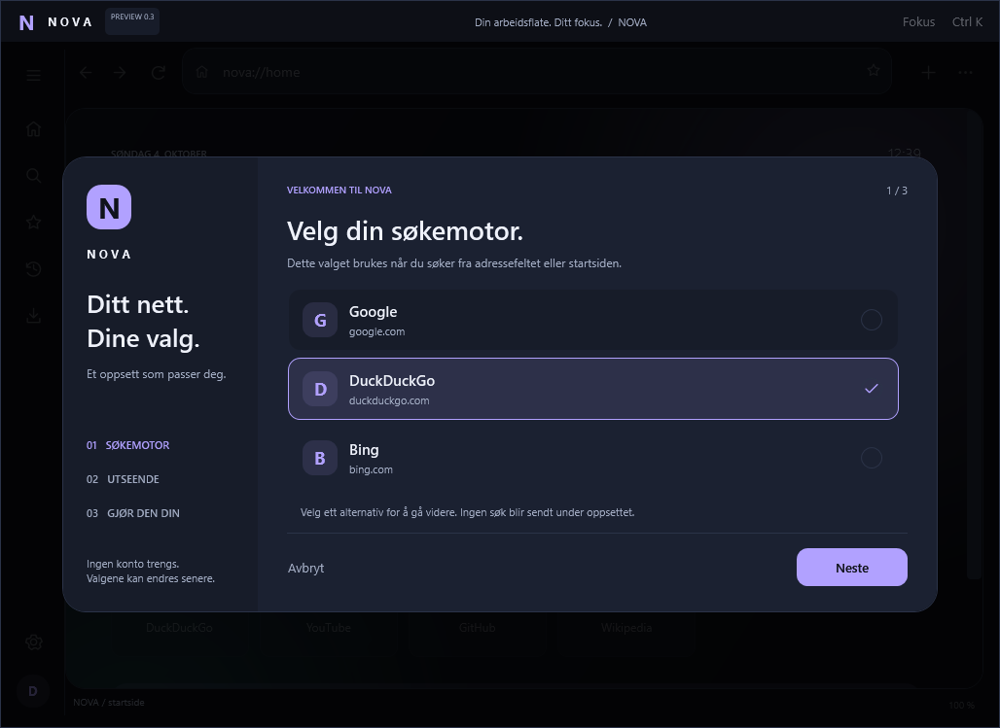

Plass til alle
tankene dine.
Fest, flytt, dupliser og demp faner. Private økter og gjenåpning av fanen du lukket litt for fort.
Illustrasjon av fanelisten
NOVABROWSERGitHubET NYTT PERSPEKTIV PÅ NETTLESEREN PREVIEW 0.3.0
Mindre standard.
Mer deg.
Faner med oversikt. Farger med personlighet. En nettleser som starter med dine valg.
For Windows · Visual Basic .NET · Under utvikling
01 / OPPLEVELSEN
NOVA utforsker en mer personlig nettleseropplevelse. Dette finnes i kildekoden til 0.3.0.
Fest, flytt, dupliser og demp faner. Private økter og gjenåpning av fanen du lukket litt for fort.
Illustrasjon av fanelistenLokale adresseforslag, fokusmodus og et kommandofelt. Med hurtigtaster som lar deg holde flyten.
Fire temaer. Seks aksentfarger. Bakgrunner og animasjoner du bestemmer over.
02 / PERSONLIG UTTRYKK
Fra stille Midnight til lyse Dawn.
Velg et uttrykk for forhåndsvisningen.
03 / FØRSTEGANGSOPPSETT
Velg Google, DuckDuckGo eller Bing. Finn temaet ditt. Bestem hvordan NOVA skal huske vanlige faner og besøk.
Utgangspunktet for søkene dine.
Tema, aksent og bevegelse.
Navn, øktsgjenoppretting og besøksliste.

04 / AMBISJONEN
Målet er en nettleser du faktisk vil velge fremfor Chrome og Firefox. Veien dit går gjennom stabilitet, testing og en opplevelse med egen identitet.
Fanestyring, lokale forslag, nedlastingspanel, fokusmodus, temaer og robust lokal lagring.
Utvid testene av hverdagsnettsteder, DPI, tilgjengelighet og nedlastingsdialoger på flere maskiner.
Fanegrupper, flere vinduer, signerte utgivelser og oppdateringer. Planer, ikke tidsløfter.
05 / BYGG VIDERE
Utforsk koden. Test en idé. Fortell hva som bør bli bedre.
NOVA er et prosjekt under utvikling, ikke en ferdig hverdagsnettleser.
# 1. Hent prosjektet git clone https://github.com/Darschnid479/NovaBrowser.git # 2. Åpne mappen cd NovaBrowser # 3. Bygg og start .\START-NOVA.cmd
Krever .NET 10 SDK og WebView2 Runtime.
Utviklingsversjon, ikke en ferdig installasjonsfil.
Det anbefales ikke på dette stadiet. 0.3.0 er en utviklingsversjon med kjente og uavklarte feil. Test med en ufølsom profil, og behold en etablert nettleser til viktige oppgaver.
Nei. Visual Basic .NET og WPF driver appens grensesnitt. Microsoft WebView2 viser nettsidene. NOVAs prosjekt er brukeropplevelsen rundt nettmotoren.
Bildene på denne siden er rendret fra den faktiske WPF-appen på Windows. Klientbildene utelater den ytre Windows-tittellinjen. Repoet inneholder også native vindusopptak og en separat nettmotorfangst av en lokal testside.
Private faner er implementert, men privat betyr ikke anonym. NOVA og WebView2 har ulike lag for datalagring. Se prosjektets personverndokument før du bruker funksjonen.